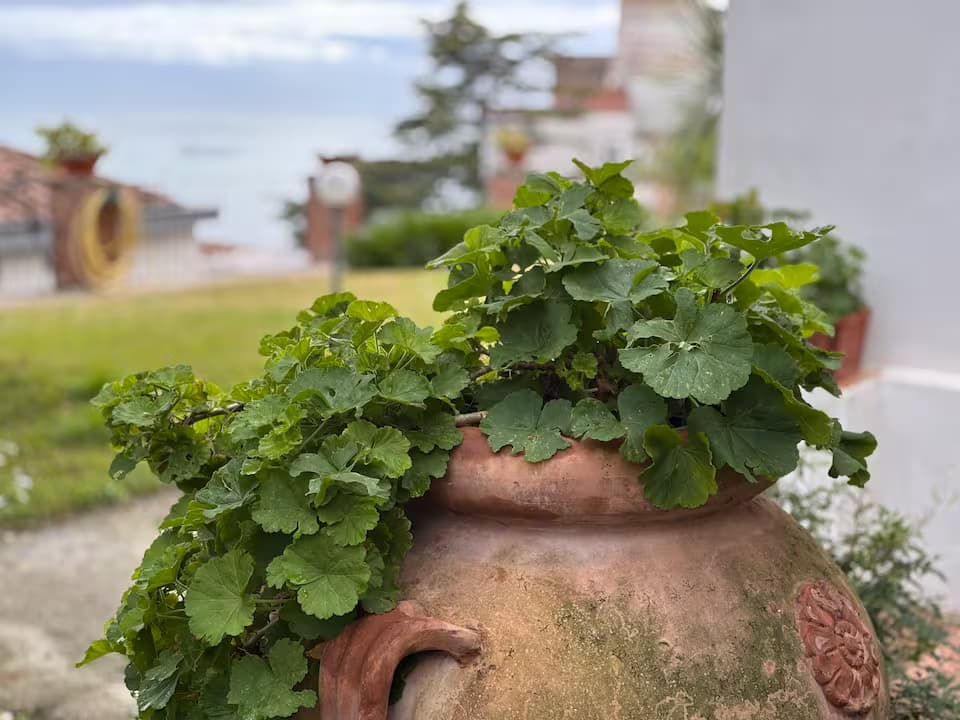
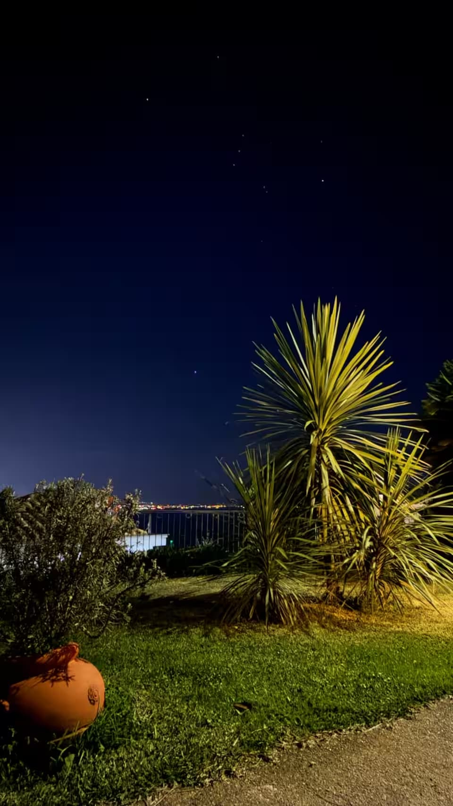
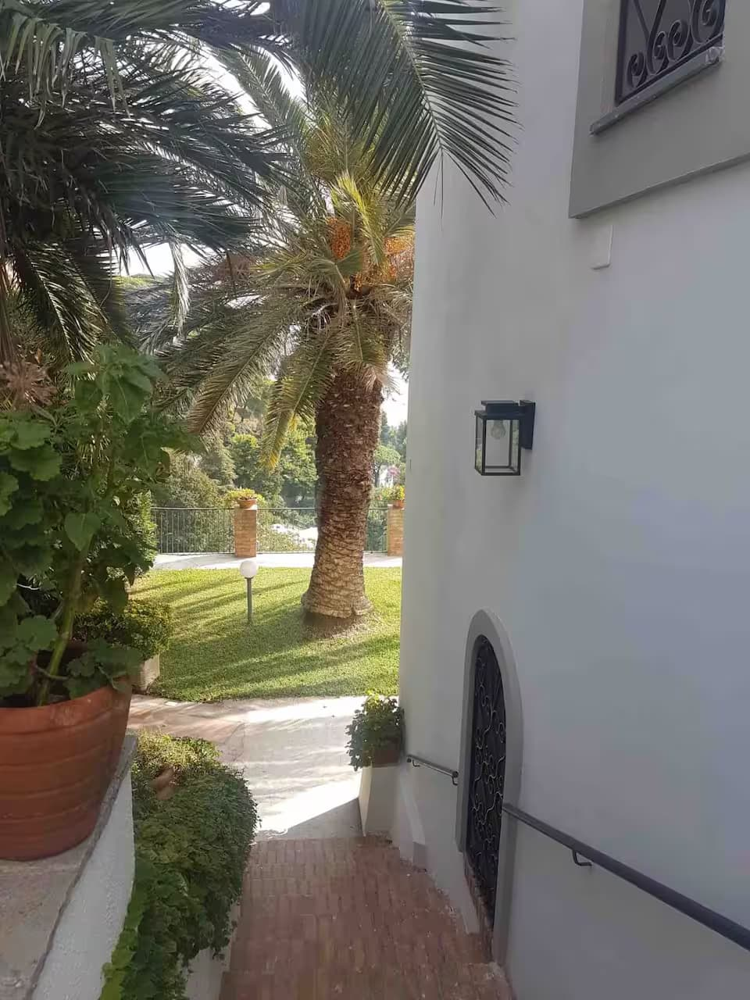
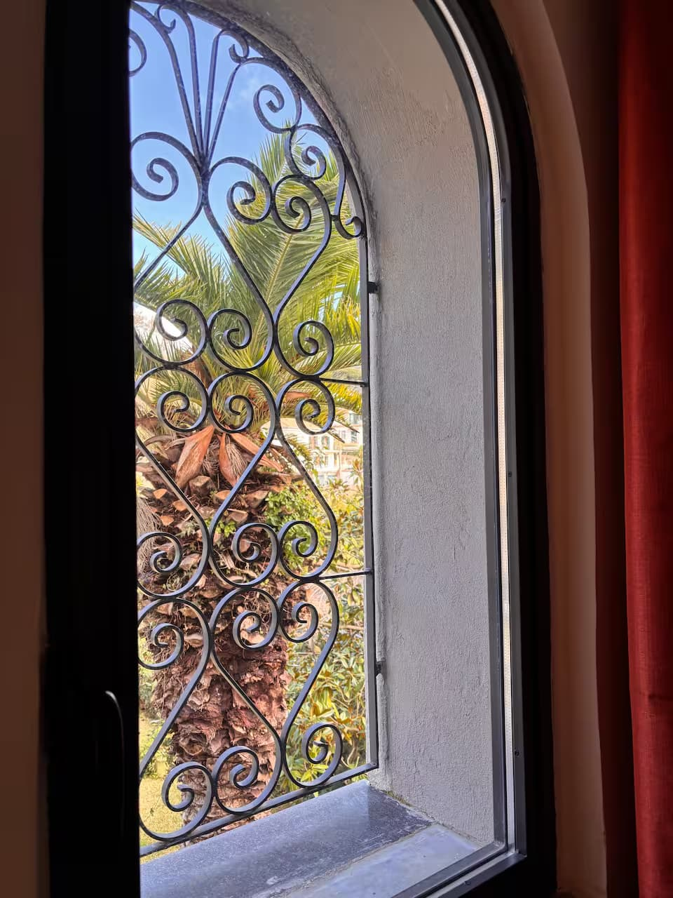
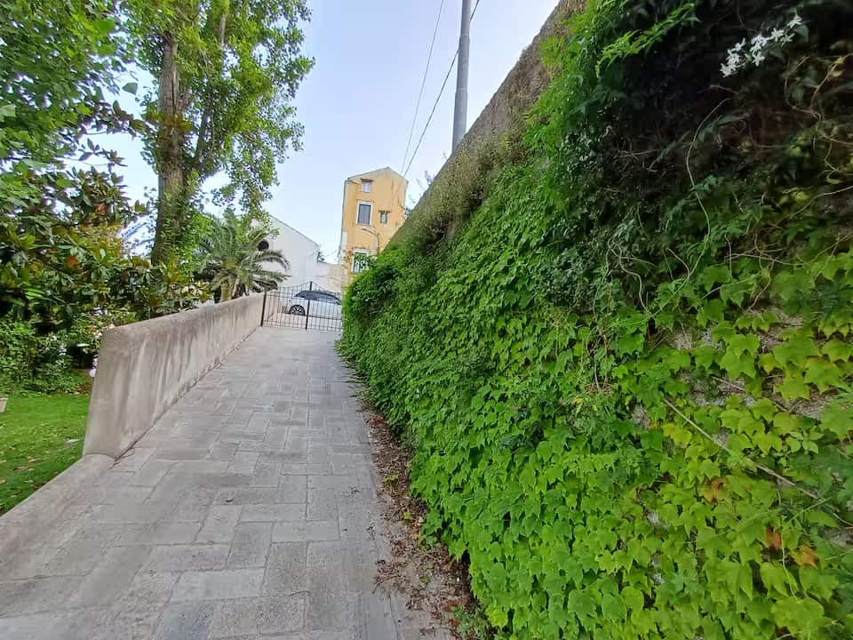
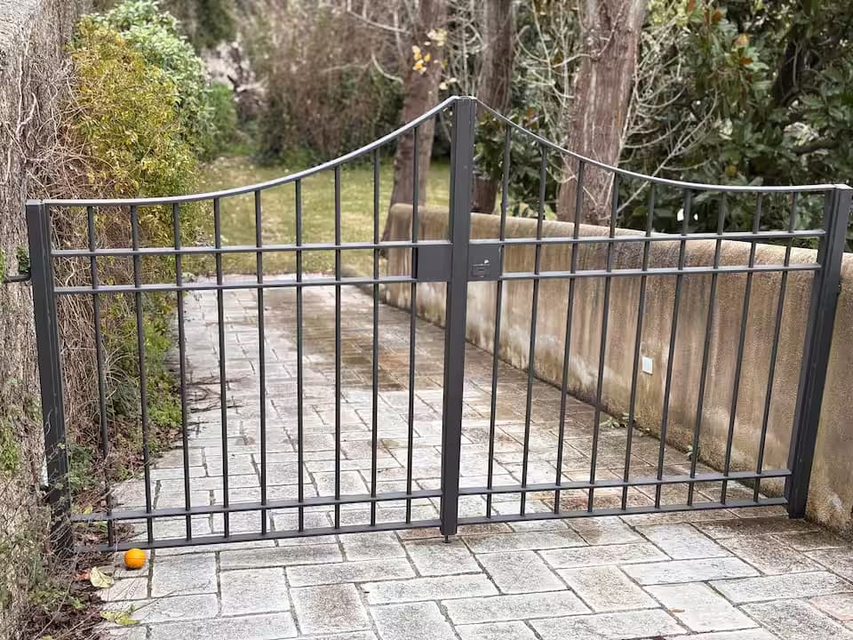

Villa San Vito is an old nineteenth-century home for days that move gently: coffee on the terrace, the garden in the warm hours, Raito at sunset, and the Gulf always below.
Its charm is not in excess, but in atmosphere: stone, shade, terraces, simple meals and the feeling of returning to a private house after the coast.
Raito, sunlit memory
A village kissed by the sun
Raito is said to carry an ancient promise of light. Suspended between mountain rock and the Gulf of Salerno, it gives Villa San Vito its quiet character: stone, terraces, sea air and the feeling of time moving more slowly.
The house belongs to this landscape. Its nineteenth-century soul keeps the local architecture close: cool rooms, outdoor passages, garden shade and views that have always shaped life above Vietri sul Mare.
Raito and Vietri in an 1819 painting by Josef Rabel.
Garden shade and open-air corners.
Garden
The villa lives outside
Terraces, leaves, silence and a table that invites you to stay longer than planned.
The interiors are there for rest and freshness; the memory of the stay is usually made outside, between the garden, the terrace and the view.
A day here
Morning, shade, evening light
MorningOpen the doors, let the Gulf in, take breakfast slowly.
AfternoonReturn from the coast and disappear into the garden.
EveningStay outside until the village lights begin to appear.
Atmosphere
Small signs of the house
A quiet edit of recent views and details: the entrance, the garden, the terrace, the night sky and one room to understand the scale without turning the site into a catalogue.
The ceramic sign at the entrance

Terracotta, leaves and sea in the distanceA terrace open to the Gulf

The garden after dark

A garden passage beside the houseWhite walls, palms and sea light

Ironwork, shade and garden outside

The green arrival path

The private garden gateOccasional lights over the GulfA simple room for rest
Lemon leaves, sky and the Gulf beyond.
Raito
Close to the coast, away from the rush
A quiet village above Vietri sul Mare, with Amalfi, Ravello, Positano and Salerno within reach.
From here the coast can be explored during the day, then left behind at night, when the village becomes calm again and the Gulf gathers the last light.
Location
Raito, above Vietri sul Mare
The map shows the general area of Raito. Exact arrival details are managed through the reservation platform.
Reservations
Book through the platform you prefer
This site does not manage direct reservations. Availability, policies and payments are handled externally.